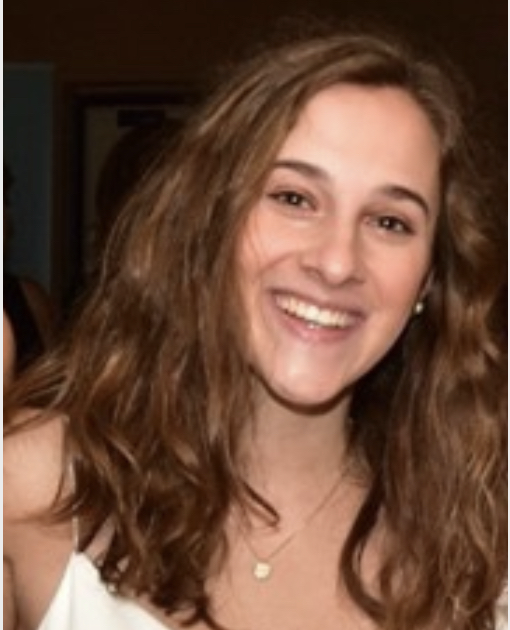
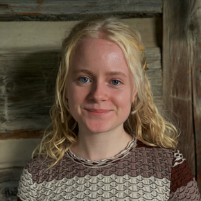

BIP began in the Winter of 2018 as merely a concern amongst friends
about a reality seen in the local community. Why weren't Rhode Island
teachers required to be CPR-certified but students were to graduate
high school, and why couldn't a policy be passed to change things?
Suddenly, extensive research on the issue had been converted into a
piece of legislation introduced into the RI Senate. It also inspired
the realization that other students at Brown may be just as
passionate about contributing to the advancement of sensible policy
solutions.
Today, BIP specializes in education, health, and urban
policy issue areas and is actively managing four research projects.
Our approach emphasizes student collaboration with relevant, local
stakeholders in Providence to conduct on-the-ground research,
creating valuable opportunities for policy and community-action
proposals. We actively seek new opportunities to leverage student
-driven research and ideas into real-world contexts. With over 40
members, BIP has quickly become Brown’s leading policy and research
student organization.
Community partnerships and a unified, research-focused mindset
are at the core of our initiative.
Our Mission
Proposing and advocating for sensible solutions to problems in Brown's community.
Meet our Team
Leadership
President & Co-Lead of Mental Health
Evan Mizerak '22
Cell and Molecular Biology
Vice President of Research
Katie Lee '22
Public Policy & Social Analysis and Research
Vice President of Project Development
Amelia Shapiro '23
Math & International and Public Affairs
Co-Lead of Mental Health
Carlie Darefsky ‘22
Cognitive Science
Lead of Refugee Education
Jack Doughty '23
International and Public Affairs
Co-Lead of BEARS
Molly Siegel '23
Public Health & International and Public Affairs
Co-Lead of BEARS
Matthew Grady '24
Philosophy & International and Public Affairs

Co-Lead of Student Privacy
Izzy Culver ‘23
International and Public Affairs
Co-Lead of Student Privacy
Max Harris ‘22
Political Science
Co-Lead of Elder Care
Zach Reiss '23
History & Economics
Co-Lead of Elder Care
Jasper Long '23
Political Science
Analysts
Mental Health Analyst
Stephen Dabrowski ‘22
Neuroscience
Mental Health Analyst
Margarita Te ‘23
International and Public Affairs & Sociology
Refugee Education Analyst
Hannah Dunn ‘23
Public Health & Sociology
Refugee Education Analyst
Aaron Rosario Jeyaraj ‘23
Computer Science
Refugee Education Analyst
Carla Balvaneda ‘22
International and Public Affairs
Elder Care Analyst
Abigail Sinotte '23
Statistics & Economics
Elder Care Analyst
Isabel Aguirre '23
International and Public Affairs
Alumni
Alumnus
Rohan Dalvi '21
Business Analyst, McKinsey & Company
Alumna
Krista Stapleford ‘21
Law Student, Harvard Law School
Alumnus
Alexander Philips '21
Medical Student, Warren Alpert Medical School of Brown University
Alumnus
Viknesh Kasturi '21
Medical Student, Warren Alpert Medical School of Brown University
Alumna
Elinor Martinez '21
Business Analyst, McKinsey & Company
Alumnus
Michael Mireles '21
Southwestern Redistricting Coordinator, Mexican American Legal Defense and Educational Fund (MALDEF)

Alumna
Stella Robertson '22
Fourth-Year Undergraduate, International and Public Affairs
Alumnus
Jack Andrews '21
Research Associate, Democratic National Committee (DNC)
Alumnus
Noah Montemarano '22
Fourth-Year Undergraduate, Public Policy & Economics